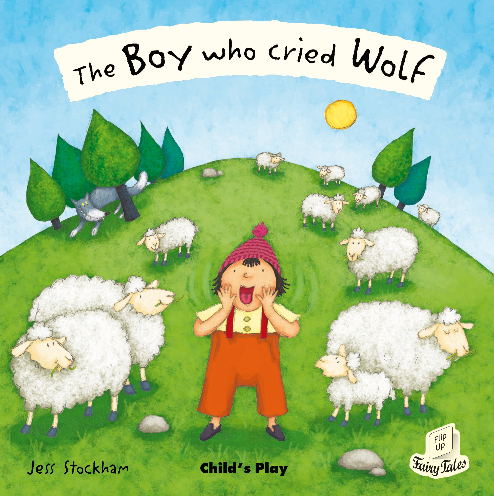

The Boy Who Cried Wolf
Overview
The Boy Who Cried Wolf is one of Aesop's Fables. The English idiom "To cry wolf" (Meaning "to give a false alarm") is derived from the story.

Plot
The Boy Who Cried Wolf is about a shepherd boy who continuously tricks the local villagers into thinking his flock is being attacked by a wolf, laughing at them when they come to his aid.
When a wolf attack actually occurs, his cries for help are ignored, and in modern versions of the story, he is eaten by the wolf.
The original Greek version ends with the moral: "this shows how liars are rewarded: even if they tell the truth, no one believes them".